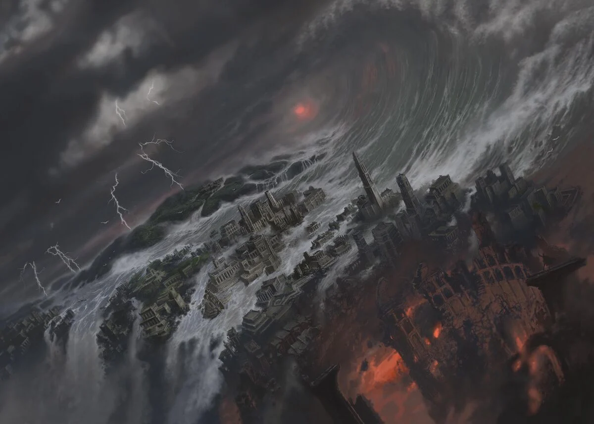

Deep Cuts — The Edges of Canon
Here we track things most viewers don't see: Blue Wizards, Dwarven rings and resilience, Númenórean politics and pride, and Melkor's older shadow behind later evils. We mark what's stated vs. what's an informed reading. These deeper elements of Tolkien's work often come from his letters, unfinished tales, and notes published later by his son Christopher. Understanding the distinction between firmly established canon and scholarly interpretation really helps when you're trying to navigate the complex relationship between Tolkien's published works and his evolving ideas.
Clarity beats trivia. If a topic hinges on a late note or letter, we say so. That keeps speculation in its lane and lets you chase the primary sources. Tolkien kept developing his legendarium throughout his life, sometimes revising earlier concepts or exploring new directions. The Silmarillion itself actually represents Christopher Tolkien's editorial decisions about which version of events to present, and understanding this editorial process really enriches our appreciation of the mythology's depth.
Use this page as a launchpad. The list below is a practical reading route designed to guide interested readers from accessible starting points to more specialized material. Each element builds on previous knowledge while introducing concepts that illuminate the broader themes of Tolkien's work. These "deep cuts" often reveal the philosophical and theological underpinnings that make Middle-earth feel like a complete, lived-in world rather than a simple fantasy setting.
Canonical Sources by Authority Level
- Published Works: The Hobbit, Lord of the Rings, Silmarillion
- Authorized Collections: Unfinished Tales, History of Middle-earth
- Letters and Notes: Tolkien's correspondence and late writings
- Adaptations: Films, series, and games (interpretative works)
Obscure but Important Elements
- The Blue Wizards and their missions in the East
- Dwarven resistance to the One Ring's influence
- The true fate of the Entwives and their gardens
- Númenórean exploration beyond Middle-earth
- The nature of Elvish fading and the Straight Road
- Tom Bombadil's relationship to the Music of Creation
Further Reading (ordered)
- Primary mentions in core texts (chapters/appendices).
- Author letters and notes that clarify intent.
- Comparative adaptations: why films/series choose differently.
Image Credits
"Fall of Númenor" by Alan Lee. Image used under educational fair use. Original artwork appears in various Tolkien illustrated editions published by HarperCollins.